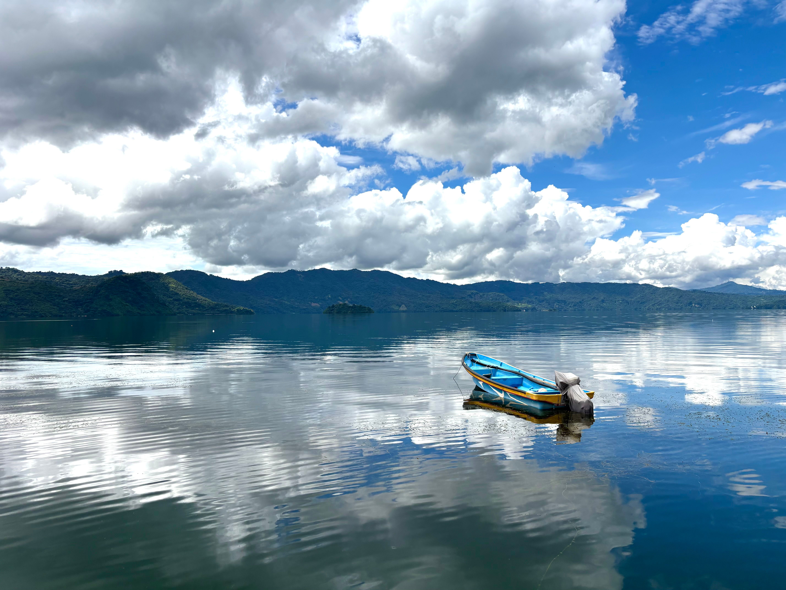
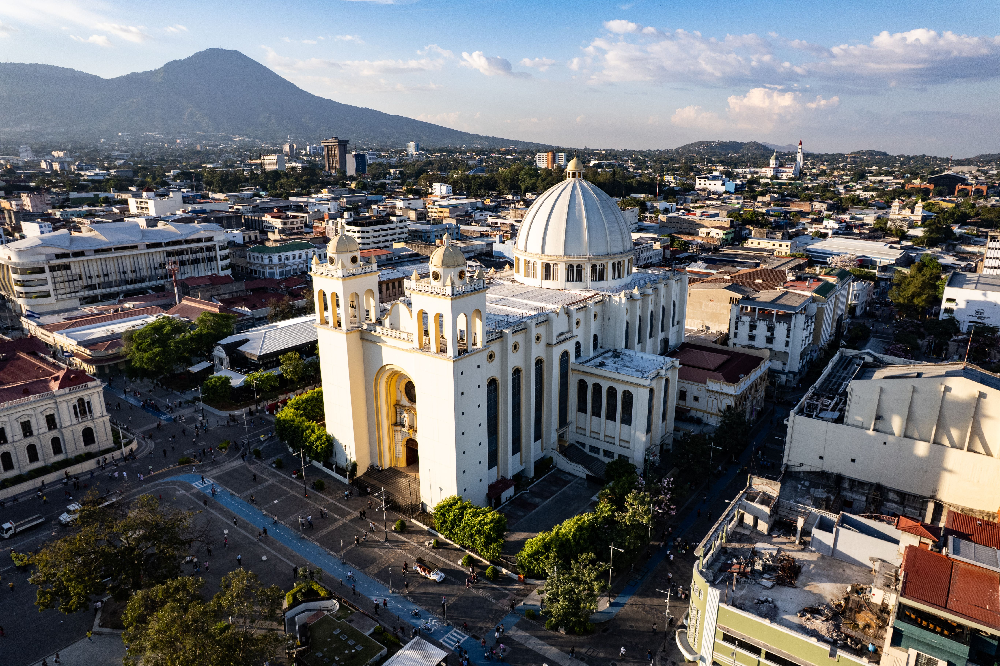
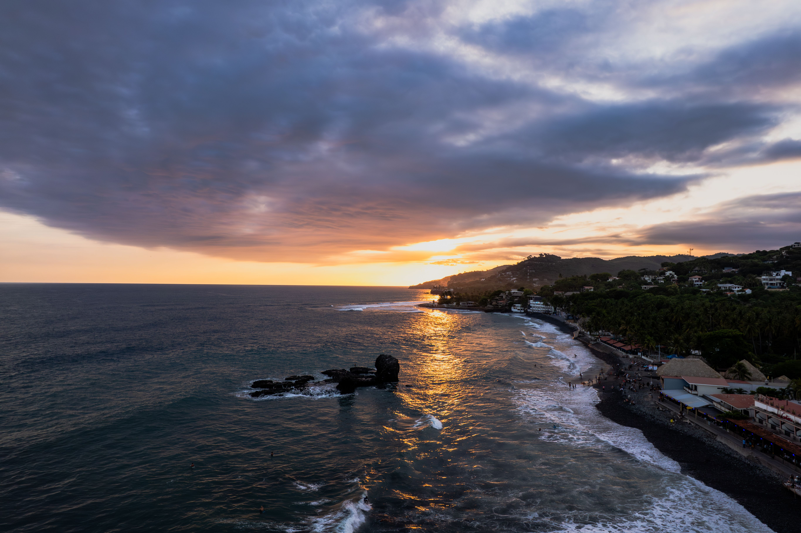
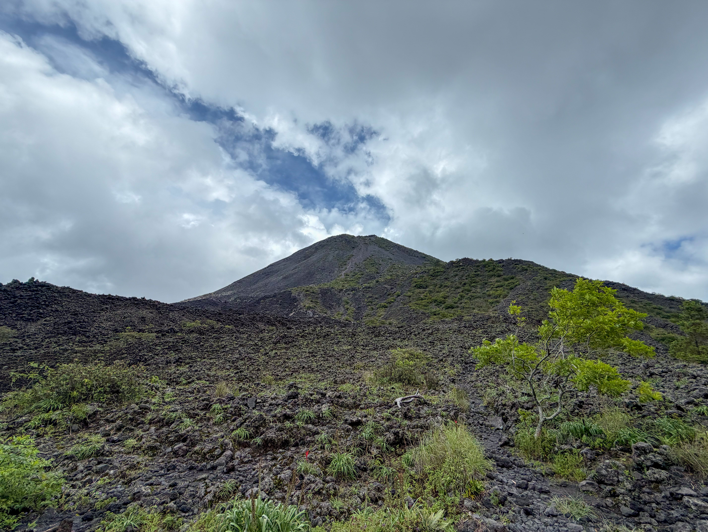

Lago de Coatepeque

Un lago de origen volcánico con aguas cristalinas que en ciertas épocas toman tonos turquesas, ideal para deportes acuáticos y gastronomía frente al agua.
Ver más

Un lago de origen volcánico con aguas cristalinas que en ciertas épocas toman tonos turquesas, ideal para deportes acuáticos y gastronomía frente al agua.
Ver más
Uno de los puntos más famosos de la costa salvadoreña, reconocido mundialmente por sus olas para el surf, su ambiente bohemio y su vida nocturna.
Ver más
El volcán más alto del país, famoso por su caminata hacia el cráter que alberga una laguna color verde esmeralda y vistas panorámicas de la zona
Ver más